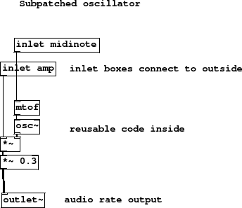

Subsections
Figure 5 summary
- inlet boxes connect to outside
- reusable code inside
- audio rate output
If we want to tidy away a whole bunch of code into its own box we can
use subpatches. Begin by creating a new object whose name begins with the
letters pd and then a space. You can make the remainder of the name anything
you like, including spaces and further symbols to help you remember parameter
inputs if you want, but these have no formal effect.
Once created the subpatch will automatically open and
you can copy and paste code into it, or write new code inside. A subpatch
is a child of the main window and does not need saving separately.
For every inlet box placed inside a subpatch a corresponding cable inlet
appears on the subpatch box. Here we have split the previous patch at
the point where MIDI notes and amplitude messages can be separated from
the oscillator, and placed the oscillator inside its own box along with
a [mtof] convertor. It's nice to tidy patches this way, but the real
reason for subpatches is to allow easy reuse of code. You should generally
make a subpatch of anything you may wish to use more than once. The outlet
of the subpatch is an audio rate connection, so observe the tilde in the
[outlet~] box.
Figure 5:
subpatched-oscillator
|

|
E-subpatched-oscillator.pd
Andy Farnell
http://obiwannabe.co.uk/